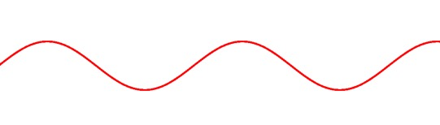

游戏中物体的运动通常是通过每一帧不断修改坐标来实现的。与动画的原理一样，大脑会将离散的位移拼补成连续的运动轨迹。下面就探讨几种运动轨迹的实现方式。
鱼的仿生运动轨迹
鱼的运动轨迹通常为曲线并伴随行进方向有轻微摆动。
贝塞尔曲线
用到三阶贝塞尔曲线就已经足够描绘出一条自然的曲线了。
$$B(t)=P_0(1-t)^3+3P_1t(1-t)^2+3P_2t^2(1-t)+P_3t^3, t\in[0,1]$$

通常三阶贝塞尔曲线的api需要我们提供四个点来确定曲线，如上图所示。
正弦曲线
单独只靠贝塞尔曲线可能会显得不够丰富。为了让鱼游起来有左右摇摆的感觉，我们引入正弦曲线。

将贝塞尔曲线和正弦曲线相加，最终包含了两种运动趋势。黑线为贝塞尔曲线，红线为叠加后的曲线。
至此，鱼的运动轨迹已粗略成型。对于运动的逼真程度有着更高要求的，只要能利用好曲线相加的思想，剩下的只是尝试更多的组合和参数。
苍蝇的仿生运动轨迹
这里所说的运动轨迹并不见得跟实际经验完全相符，而是一种螺旋前进的运动轨迹。
圆周运动
使用圆的参数方程更方便：
$$
\begin{cases}
x & = & \cos(t) \
y & = & \sin(t)
\end{cases}
$$
使用参数方程不仅可以回避平方开方运算，还可以让坐标仅与时间相关，方便在update中更新坐标。
曲线叠加
圆周运动只能描述盘旋，我们还需要给出一个行进方向的曲线。同样需要参数方程才能方便运算。这里只给出直线的效果，其他参数方程，比如圆、椭圆、双曲线请看官自行尝试。
行星公转轨迹
这里介绍的是透视角度的公转轨迹。
椭圆
参数方程：
$$
\begin{cases}
x & = & \ a\cdot cos(t) \
y & = & \ b\cdot sin(t)
\end{cases}
$$
a，b为长短轴，如果相等就是圆形。
透视
行星会按透视近大远小，远近与纵坐标相关，大小与scale相关。最终根据y值来计算scale值。效果如下：